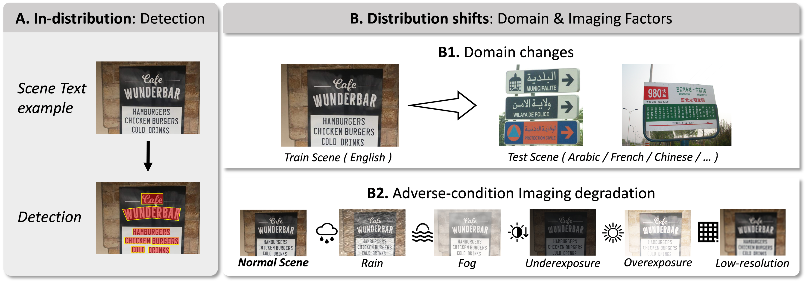
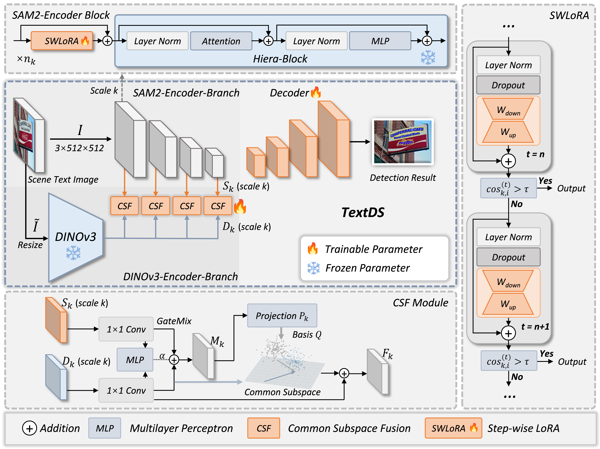
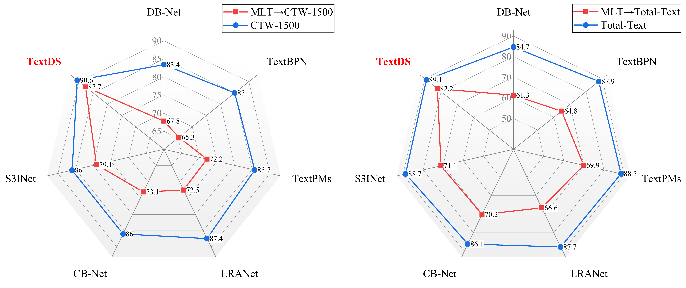
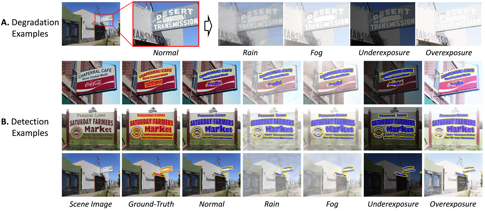

TextDS 将 SAM2 的结构先验与 DINOv3 的鲁棒语义表征组成双编码器，在冻结大模型主体的前提下，用 Step-wise LoRA 做逐步低秩适配，再用 Common Subspace Fusion 在共享子空间中融合两路特征；论文报告其无需 SynthText 场景文字预训练，仅用 4.9M 可训练参数，在 CTW-1500、Total-Text、MLT 及退化成像条件下取得有竞争力的检测性能（见 PAGE 1、PAGE 11、PAGE 12）。
这篇论文处理的是一个很具体、也很贴近部署的问题：场景文字检测器在训练集之外的真实世界图像中会遭遇分布偏移。作者在摘要中明确写道，scene text detectors inevitably face distribution shifts beyond the training distribution
（见 PAGE 1）。这里的分布偏移不是抽象概念，而是包括跨数据源的域变化，以及拍摄和传输过程引入的低分辨率、雨、雾、欠曝、过曝等成像退化。
论文的核心目标不是再提出一个只在标准 benchmark 上刷分的文字检测器，而是提出一个在参数量、数据需求和退化鲁棒性之间更均衡的检测框架。作者强调现有方法通常依赖 SynthText-800k 或 SynthText-150k 这类大规模场景文字预训练，而 TextDS 试图绕开这种强依赖，转而利用视觉基础模型的通用表征能力（见 PAGE 2、PAGE 3）。
从贡献表述看，TextDS 有四个主要组成部分：第一，使用 SAM2 与 DINOv3 构建数据高效的双编码器；第二，在 SAM2 Hiera block 前加入 Step-wise LoRA，即 SWLoRA；第三，用 Common Subspace Fusion，即 CSF，对齐并融合两路多尺度特征；第四，构造 adverse-condition scene text detection datasets，用于系统评估真实退化条件下的鲁棒性（见 PAGE 1、PAGE 3、PAGE 10）。
需要先说明一个证据边界：论文主文提供了方法公式、实验表格和图示，但当前输入没有补充材料，也没有可读取代码仓库。因此，关于实现细节只能依据论文正文；任何未在正文出现的训练 trick、源码函数名、配置项或仓库路径均属于证据不足。
场景文字检测的任务是定位自然场景中的文字实例，它通常是端到端 OCR 与后续文本理解的前置步骤。论文在 PAGE 1 指出，可靠的文字检测支撑即时翻译、导航、移动文档采集、支付、工业检测和具身机器人感知等应用。由于文字区域携带密集且明确的语义线索，检测质量会直接限制后续识别与解析的上限（见 PAGE 2）。
现有场景文字检测方法大体分成两类。第一类是 pixel aggregation，即像素聚合方法，代表包括 DB-Net、TextPMs、S3INet 等。这类方法预测概率图、中心区域、方向场或距离场，再通过二值化、连通域、区域生长等方式聚合成实例。第二类是 explicit structure modeling，即显式结构建模方法，代表包括 TextBPN、LRANet、ERRNet 等，它们更直接地预测边界、轮廓、低秩形状基或组件关系（见 PAGE 2 至 PAGE 4）。
这两类范式都能在标准数据集上达到较高精度，但论文指出它们大多是在相对理想的采集条件下开发和评估的，并且依赖大规模场景文字专用预训练来提升同分布性能（见 PAGE 2）。真实部署时，摄像头、语言、字体、拍摄距离、传输压缩、照明和天气都可能改变输入分布。这样的变化会同时损害像素可分性与几何线索，导致像素聚合方法的阈值和区域生长不稳定，也削弱结构建模方法的边界定位与组件关联能力（见 PAGE 2 至 PAGE 3）。
Fig. 1 将这两类偏移可视化：一类是跨域变化，例如英语、法语、阿拉伯语、中文等语言和字体源变化；另一类是成像退化，例如低分辨率、雨、雾、欠曝和过曝（见 PAGE 2）。这个图是理解论文动机的关键，因为它把“泛化问题”落实为文字检测系统真正会遇到的输入异常，而不是只讨论训练集和测试集名称的差异。

基础模型提供了一条新的路线。DINO、DINOv2、DINOv3 通过自监督学习获得较强迁移能力；SAM 和 SAM2 则提供可复用的密集结构表征。论文的出发点是：与其为文字检测单独做大规模合成预训练，不如将这些视觉基础模型的通用先验参数高效地迁移到文字检测上（见 PAGE 4 至 PAGE 5）。
首先需要区分“特征提取能力”和“任务适配能力”。SAM2、DINOv3 这类基础模型已经具备强表征能力，但它们并不是为场景文字检测直接训练的。TextDS 的设计策略是冻结大部分预训练参数，只训练少量适配和融合模块，使通用视觉表征变成文字区域概率图所需的判别性特征。
其次，LoRA 的核心思想是在预训练线性层附近注入低秩可训练更新。对于一个高维权重更新，如果直接训练完整矩阵会有很高参数成本；LoRA 用低秩分解近似更新方向，从而减少可训练参数。TextDS 的 SWLoRA 并不是普通单步 LoRA，而是在每个 SAM2 Hiera block 前做多步低秩残差细化，并用余弦相似度判断是否提前停止（见 PAGE 7 至 PAGE 8）。
最后，CSF 涉及“公共子空间”概念。SAM2 分支偏结构，DINOv3 分支偏语义；如果简单拼接或相加，可能会混掉两者各自有用但不一致的部分。CSF 先估计两路特征的共享变化方向，在共享子空间内融合，同时保留 DINOv3 的正交补空间，以避免破坏 DINOv3 特有的域鲁棒信息（见 PAGE 8 至 PAGE 9）。
TextDS 的总体结构见 Fig. 2。输入图像同时进入 SAM2-Encoder-Branch 和 DINOv3-Encoder-Branch。SAM2 分支提供多尺度结构先验，DINOv3 分支提供高层语义表征；多尺度对齐之后，两路特征通过 CSF 融合，再由轻量 decoder 输出文字概率图。每个 SAM2 Encoder Block 前使用 SWLoRA 做参数高效微调（见 PAGE 5 至 PAGE 6）。

flowchart TB
I[Input image] --> S[SAM2 Hiera branch]
I --> D[DINOv3 ViT branch]
S --> L[SWLoRA before Hiera blocks]
D --> A[Scale alignment]
L --> C[CSF common subspace]
A --> C
C --> Dec[Light decoder]
Dec --> P[Text probability map]
形式化地，论文将输入图像写作：
$$I \in \mathbb{R}^{B \times 3 \times H \times W}.$$
这表示输入是一个批量图像张量，$B$ 是 batch size，通道数为 3，空间分辨率为 $H \times W$；该定义见 PAGE 6 的 Eq. (1)。
SAM2 分支只保留 image encoder trunk，移除 prompt encoder、mask decoder 与 memory-related components，并作为冻结结构特征提取器。论文写作：
$$\{S_1,S_2,S_3,S_4\}=E_{\mathrm{sam2}}(I),\quad S_k\in\mathbb{R}^{B\times C_k\times H_k\times W_k},\quad k\in\{1,2,3,4\}.$$
这说明 SAM2 输出四级特征金字塔，每级具有不同通道数和空间尺寸；正文给出的通道为 $(144,288,576,1152)$，证据见 PAGE 6 的 Eq. (2)、Eq. (3)。
DINOv3 分支则先把输入 resize 到 $448\times448$，再取 ViT-L/16 的最后输出特征：
$$\tilde I=\mathrm{Resize}(I,448,448),\qquad D=E_{\mathrm{DINO}}^{(\mathrm{last})}(\tilde I),\quad D\in\mathbb{R}^{B\times1024\times28\times28}.$$
这里 $28\times28$ 来自 $448/16=28$ 的 patch 划分，1024 是 DINOv3 ViT-L/16 的通道维度；证据见 PAGE 7 的 Eq. (5)、Eq. (6)。
由于 DINOv3 只给出单尺度特征，TextDS 用四个 $1\times1$ 卷积和双线性 resize 将其对齐到 SAM2 的每个尺度：
$$D_k=\mathrm{Resize}(\mathrm{Align}_k(D),(H_k,W_k)),\qquad \mathrm{Align}_k:\mathbb{R}^{1024}\rightarrow\mathbb{R}^{C_k}.$$
这一步的含义是：DINOv3 的全局语义特征被投影到与每个 SAM2 尺度相同的通道数和空间大小，形成 $(S_k,D_k)$ 这样的可融合特征对；证据见 PAGE 7 的 Eq. (7)。
TextDS 的第一个关键创新是把两个视觉基础模型的优势拆开使用。SAM2-Hiera-L 提供多尺度结构编码，适合处理文字边界、笔画形状和层级几何；DINOv3 ViT-L/16 提供高层语义表示，适合在跨域输入下保持相对稳定的语义聚合。论文在方法总览中明确写道，SAM2 encoding branch 提供 structure and multi-scale priors，而 DINOv3 encoding branch 提供 robust semantic representation（见 PAGE 6）。
这种设计针对的是传统文字检测器对专用合成数据预训练的依赖。论文强调 TextDS 不依赖 large-scale scene-text-specific pretraining，并在 Table 1 中标明 TextDS 的 SynthText 预训练需求为 ✗，而列出的 DB-Net、TextBPN、TextPMs、LRANet、CB-Net、S3INet 等方法均为 ✓（见 PAGE 11）。这不是一个小的工程细节，而是方法论差异：TextDS 将“文字专用大数据预训练”替换成“通用基础模型 + 少量可训练适配”。
双编码器也并非简单堆模型。SAM2 的输出是四级金字塔，DINOv3 的输出是单级语义图，因此论文必须解决尺度对齐和跨分支融合问题。对齐由 Eq. (7) 处理，融合由后续 CSF 处理。换句话说，双编码器只是提供互补信息源，真正决定信息是否有效合流的是 CSF。
从部署角度看，这种设计的直接指标是可训练参数量和速度。Table 1 报告 TextDS 的可训练参数为 4.9M，FPS 为 44.1，低于对比方法的参数量并高于列出的 FPS；例如 DB-Net 为 28.0M 和 35.0 FPS，S3INet 为 38.0M 和 37.3 FPS（见 PAGE 11）。需要注意，论文只报告 trainable parameters，而不是完整推理模型的总参数或显存占用；若要评估端侧部署成本，仍需实际测量冻结基础模型带来的内存和计算开销，当前材料对此证据不足。
TextDS 的第二个关键创新是 SWLoRA。普通 LoRA 往往对某个线性层注入一次静态低秩更新，而 SWLoRA 被放在每个冻结 SAM2 Hiera block 之前，对输入 token 做最多 $T$ 步的低秩残差细化。论文动机是场景文字检测具有尺度依赖：高分辨率阶段关系到笔画边界和细结构，中间阶段影响实例连通与形变一致性，低分辨率阶段更多提供全局布局和背景抑制（见 PAGE 7）。
对于第 $k$ 个 stage 的第 $i$ 个 Hiera block，论文将冻结 block 的映射记为 $f_{k,i}(\cdot)$，加入 SWLoRA 后输出为：
$$y_{k,i}=f_{k,i}\left(\mathrm{SWLoRA}_{k,i}(x_{k,i})\right).$$
这表示原始 SAM2 block 仍然冻结，SWLoRA 只是在 block 输入前改变传入表征；证据见 PAGE 7 的 Eq. (8)。
SWLoRA 的逐步细化过程写作：
$$x_{k,i}^{(t+1)}=x_{k,i}^{(t)}+\gamma_{k,i,t}\Delta_{k,i}\left(x_{k,i}^{(t)}\right),\quad t=0,\ldots,T-1.$$
这表示每一步都在当前表示上叠加一个低秩残差更新，$\gamma_{k,i,t}$ 是可学习步长；证据见 PAGE 7 的 Eq. (9)。
低秩残差映射本身为：
$$\Delta_{k,i}(x)=\frac{\alpha}{r}W_{\mathrm{up}}^{(k,i)}\left(W_{\mathrm{down}}^{(k,i)}\left(\mathrm{Dropout}(\mathrm{LN}(x))\right)\right).$$
这个公式说明 SWLoRA 先归一化并 dropout，再通过 down-projection 和 up-projection 构造低秩更新；$r$ 是 LoRA rank，$\alpha$ 是缩放因子；证据见 PAGE 8 的 Eq. (10)。
关键之处在于动态 early-exit。每得到一个新状态 $x^{(t+1)}$，SWLoRA 计算它和上一状态 $x^{(t)}$ 的余弦相似度：
$$\cos_{k,i}^{(t)}=\frac{\left\langle \mathrm{vec}\left(x_{k,i}^{(t+1)}\right),\mathrm{vec}\left(x_{k,i}^{(t)}\right)\right\rangle}{\left\|\mathrm{vec}\left(x_{k,i}^{(t+1)}\right)\right\|_2\left\|\mathrm{vec}\left(x_{k,i}^{(t)}\right)\right\|_2+\varepsilon}.$$
这个公式衡量连续两步表征方向是否趋于稳定；相似度高意味着当前 block 已吸收足够任务修正，证据见 PAGE 8 的 Eq. (11)。
停止条件为：
$$t+1\ge T_{\min}\quad \mathrm{and}\quad \cos_{k,i}^{(t)}>\tau.$$
也就是说，至少执行最小步数后，如果连续状态余弦相似度超过阈值 $\tau$，就提前退出；论文实验中最大步数设为 $T=5$，最小步数 $T_{\min}=1$，见 PAGE 8 的 Eq. (12)。
这个机制的意义是把计算预算分配给更难样本和更需要修正的 block。PAGE 14 报告，在默认 Rank = 8、Maximum Step = 5 时，平均执行步数在 CTW-1500、Total-Text、MLT 上分别为 3.652、2.205、3.476，相当于相对 5 步减少 27.0%、55.9%、30.5%。这组结果说明 SWLoRA 不只是增加容量，也有自适应停止带来的计算节省。
TextDS 的第三个关键创新是 CSF。双编码器带来互补信息，但也带来一个问题：SAM2 和 DINOv3 的特征分布、尺度和关注点并不一致。如果直接相加，可能会破坏 DINOv3 的域鲁棒语义；如果只拼接，融合模块可能学习到数据集特定的冗余关联。CSF 的做法是先将两路特征投影到公共通道空间，再估计共享子空间，只在共享部分进行跨分支融合，同时显式保留 DINOv3 的正交补空间（见 PAGE 8 至 PAGE 9）。
首先，两路特征被投影到同一通道维度 $C$：
$$\hat S_k=\phi_s^{(k)}(S_k),\qquad \hat D_k=\phi_d^{(k)}(D_k),\qquad \hat S_k,\hat D_k\in\mathbb{R}^{B\times C\times H_k\times W_k}.$$
这里 $\phi_s^{(k)}$ 和 $\phi_d^{(k)}$ 是轻量 $1\times1$ 卷积，用来统一通道维度；证据见 PAGE 9 的 Eq. (13)。
接着，CSF 从两路特征的全局平均池化统计中产生输入自适应 gate：
$$\alpha_k=\sigma\left(\mathrm{MLP}\left([\mathrm{GAP}(\hat S_k);\mathrm{GAP}(\hat D_k)]\right)\right),\qquad M_k=\alpha_k\odot\hat S_k+(1-\alpha_k)\odot\hat D_k.$$
这一步先做加权混合，$\alpha_k$ 可以理解为当前尺度上结构分支和语义分支的相对权重；证据见 PAGE 9 的 Eq. (14)。
为了估计共享子空间，论文将空间维展平、均值中心化，得到 $X_{S_k},X_{D_k}\in\mathbb{R}^{B\times C\times N_k}$，然后构造协方差与二阶代理矩阵：
$$\Sigma_{S_k}=\frac{1}{N_k}X_{S_k}X_{S_k}^{\top}+\varepsilon I,\qquad \Sigma_{D_k}=\frac{1}{N_k}X_{D_k}X_{D_k}^{\top}+\varepsilon I,\qquad A_k=\Sigma_{S_k}\Sigma_{D_k}.$$
这组公式用二阶统计捕获两路特征的共享变化方向，论文取 $A_k$ 的 top-$r$ eigenspace，默认 $r=16$，获得正交基 $Q_k$；证据见 PAGE 9 的 Eq. (15)、Eq. (16)。
最终融合写作：
$$P_k(X)=Q_k(Q_k^{\top}X),\qquad F_k=P_k(M_k)+\left(\hat D_k-P_k(\hat D_k)\right).$$
第一项是在公共子空间内融合后的特征，第二项保留 DINOv3 不属于公共子空间的正交补信息；证据见 PAGE 9 的 Eq. (17)、Eq. (18)。
这个设计的技术含义很明确：CSF 不强行把两路特征全部压到同一个表示里，而是区分“可以融合的共同信息”和“应该保留的 DINOv3 特有信息”。在分布偏移任务中，这一点很重要，因为某些 DINOv3 语义成分可能正是跨域鲁棒性的来源。论文的消融结果也支持 CSF 的作用：在 Dual-Encoding + SWLoRA 的基础上加入 CSF，CTW-1500、Total-Text、MLT 的 F-measure 分别达到 90.6、89.1、92.2；相关消融见 PAGE 12 的 Table 3。
论文 PAGE 1 声称代码公开，但当前任务输入没有提供可读取的 GitHub 仓库、源码文件、README、commit 或配置。因此，严格按照证据约束，本文未提供可确认的公开代码，也不能给出“文件路径:行号”式源码分析。以下只能做论文级组件映射，而非源码级确认。
| 论文组件 | 正文证据 | 可确认到源码吗 | 说明 |
|---|---|---|---|
| SAM2-Hiera-L 分支 | PAGE 6，Eq. (2)-(4) | 否 | 论文说明保留 SAM2 image encoder trunk 并冻结原参数，但未提供源码。 |
| DINOv3 ViT-L/16 分支 | PAGE 7，Eq. (5)-(7) | 否 | 论文说明输入 resize 到 448×448，取 last feature，未给实现文件。 |
| SWLoRA | PAGE 7-8，Eq. (8)-(12) | 否 | 可依据公式理解步骤、rank、early-exit，但不能确认具体模块命名。 |
| CSF | PAGE 8-9，Eq. (13)-(18) | 否 | 可依据公式理解公共子空间融合，但不能确认数值实现和稳定化细节。 |
| 训练配置 | PAGE 10 | 否 | 论文给出 PyTorch、RTX 4090、50 epochs、batch size 4、AdamW 等信息，但未给配置文件。 |
论文实验覆盖标准数据集和作者构造的退化数据集。标准数据集包括 CTW-1500、Total-Text 和 MLT。CTW-1500 聚焦长且不规则的曲线文字，标准划分为 1000 张训练图像和 500 张测试图像；Total-Text 包含多方向和曲线文字，常用划分为 1255 张训练图像和 300 张测试图像；MLT 面向多语言、多脚本文字，论文使用 7200 张训练图像和 1800 张测试图像（见 PAGE 9 至 PAGE 10）。
退化数据集方面，论文基于 CTW-1500、Total-Text、MLT 构造 Rain、Fog、Underexposure、Overexposure、Low-resolution 五类子集，并保持 ground-truth annotations 不变（见 PAGE 10）。这个设计可以系统比较同一检测器在退化前后的性能变化，但也带来一个评估边界：这些退化是对原图施加的处理，不等价于完整真实采集链路中的所有复杂退化；论文提到真实夜间低光 zero-shot 实验在 supplementary materials 中，但当前全文输入未提供补充材料，故具体数据证据不足。
实现细节方面，TextDS 用 PyTorch 实现，初始化为 SAM2-Hiera-L 和 DINOv3 ViT-L/16。训练时图像和 mask resize 到 $512\times512$，单卡 NVIDIA RTX 4090，训练 50 epochs，batch size 为 4，优化器为 AdamW，初始学习率 0.001，weight decay 为 $5\times10^{-4}$，cosine annealing 最小学习率为 $1\times10^{-7}$。损失函数是 binary cross-entropy 与 IoU 等权组成的 structure loss，用于强调边界区域（见 PAGE 10）。
评价指标为 Precision、Recall 和 F-measure。论文没有在正文给出更复杂的鲁棒性指标，而是主要用标准 P/R/F 以及退化条件下的性能下降趋势来说明鲁棒性（见 PAGE 10、PAGE 12、PAGE 14）。
Table 1 是论文最关键的标准条件结果表。TextDS 在 CTW-1500 上达到 P/R/F = 91.6/89.6/90.6，在 Total-Text 上达到 89.7/88.4/89.1，在 MLT 上达到 92.4/92.0/92.2；同时不使用 SynthText 预训练，可训练参数为 4.9M，FPS 为 44.1（见 PAGE 11）。
| 方法 | 发表 | SynthText 预训练 | 可训练参数 | CTW-1500 F | Total-Text F | MLT F | FPS |
|---|---|---|---|---|---|---|---|
| DB-Net | AAAI 2020 | ✓ | 28.0M | 83.4 | 84.7 | 85.6 | 35.0 |
| TextBPN | ICCV 2021 | ✓ | 38.7M | 85.0 | 87.9 | 87.4 | 22.6 |
| LRANet | AAAI 2024 | ✓ | 34.3M | 87.4 | 87.7 | 88.3 | 38.1 |
| CB-Net | IJCV 2024 | ✓ | 12.3M | 86.0 | 86.1 | 88.9 | 32.9 |
| S3INet | TNNLS 2025 | ✓ | 38.0M | 86.0 | 88.7 | 89.7 | 37.3 |
| TextDS | - | ✗ | 4.9M | 90.6 | 89.1 | 92.2 | 44.1 |
这张表有两个层面的含义。第一是准确率：TextDS 在三个数据集的 F-measure 都处于表中最优或非常接近最优的位置，尤其在 CTW-1500 和 MLT 上优势明显。第二是效率：它在不使用 SynthText 预训练的情况下以 4.9M 可训练参数取得最高 FPS。若只看“可训练参数”，TextDS 的参数效率非常突出；但如前所述，完整部署成本还需要考虑 SAM2 与 DINOv3 冻结主干的实际推理负担，论文表格没有给出总参数和显存峰值，不能据此断言其在所有边缘设备上都轻量。
Fig. 3 展示了从 MLT 泛化到 CTW-1500 和 Total-Text 的结果。论文说明蓝色圆圈表示模型在各自数据集上的 F-measure，红色圆圈表示从 MLT 泛化到目标数据集时的 F-measure。主文给出定性结论：TextDS 在 domain-specific performance 最好时，也表现出显著更好的 domain generalization（见 PAGE 11 至 PAGE 12）。当前输入未提供 Fig. 3 的可机器读取数值，因此这里不编造具体红蓝点数值。

退化条件实验是这篇论文区别于常规文字检测论文的关键部分。Table 2 报告 TextDS 在 Rain、Fog、Underexposure、Overexposure、Low-resolution 256×256 与 128×128 下的 P/R/F。总体看，TextDS 在多种退化条件下仍保持较高 F-measure，尤其低分辨率 128×128 是下降最明显的场景之一（见 PAGE 12）。
| 条件 | CTW-1500 F | Total-Text F | MLT F | 相对正常条件的主要观察 |
|---|---|---|---|---|
| Normal | 90.6 | 89.1 | 92.2 | 正常条件基准，见 PAGE 12。 |
| Rain | 89.2 | 87.7 | 91.6 | 三组数据均有下降，但 MLT 下降较小。 |
| Fog | 89.8 | 88.3 | 91.9 | 雾退化下 F-measure 接近正常条件。 |
| Underexposure | 90.1 | 87.8 | 92.1 | CTW-1500 与 MLT 保持较高，Total-Text 下降更明显。 |
| Overexposure | 89.9 | 87.9 | 91.8 | 过曝仍保持较高 F，但均低于 Normal。 |
| Low-resolution 256×256 | 89.8 | 88.3 | 90.9 | MLT 下降幅度大于 CTW-1500 和 Total-Text。 |
| Low-resolution 128×128 | 88.9 | 88.0 | 88.3 | MLT 从 92.2 降至 88.3，是表中最明显退化之一。 |
这些结果说明 TextDS 的鲁棒性并非只体现在单一数据集或单一退化上。以 CTW-1500 为例，正常条件 F 为 90.6，128×128 低分辨率下仍为 88.9；以 MLT 为例，正常条件 F 为 92.2，雨、雾、欠曝、过曝下分别为 91.6、91.9、92.1、91.8，但 128×128 低分辨率下降到 88.3。这个模式符合直觉：天气和曝光变化会改变对比度、噪声和局部可见性，而强低分辨率直接损失笔画纹理，对多语言复杂文字尤其不利。
Fig. 4 展示退化样例和 TextDS 检测结果，红色为 ground truth，蓝色为 TextDS 检测区域。PAGE 13 同一图像文件中还包含 Fig. 5 与 Fig. 6 的页面内容候选：Fig. 5 比较 TextDS 与 S3INet、TextPMs、DBNet 在 adverse-condition scenarios 下的 F-measure；Fig. 6 展示 Rank 和 Maximum Step 对 F-measure 的影响。由于给定 figures 只提供一个 page image，本文仅使用该 html_path 展示，不虚构拆分图片路径。

PAGE 14 对 Fig. 5 的文字解释是：在退化条件下，TextDS 相比代表性 baseline 获得 consistently higher overall performance，并且相对正常条件的 F-measure drop 更小。这是论文对鲁棒性的强结论；不过当前输入没有 Fig. 5 的结构化数值表，因此可以引用结论，但不能补充未给出的每个 baseline 每种退化数值。
Table 3 是理解 TextDS 内部贡献的主要证据。基础模型在没有三个关键组件时，CTW-1500、Total-Text、MLT 的 F-measure 分别为 82.2、85.1、86.4。加入 Dual-Encoding 后变为 85.3、86.0、88.1。再加入 SWLoRA 变为 87.9、88.3、90.3。Dual-Encoding + CSF 则为 88.2、87.8、91.0。三者全部启用时达到 90.6、89.1、92.2（见 PAGE 12）。
| Dual-Encoding | SWLoRA | CSF | CTW-1500 F | Total-Text F | MLT F | 解读 |
|---|---|---|---|---|---|---|
| - | - | - | 82.2 | 85.1 | 86.4 | 基础设置，作为消融起点。 |
| ✓ | - | - | 85.3 | 86.0 | 88.1 | 双编码器本身带来明显提升，说明 SAM2 与 DINOv3 互补有效。 |
| ✓ | ✓ | - | 87.9 | 88.3 | 90.3 | SWLoRA 进一步改善任务适配，三个数据集均提升。 |
| ✓ | - | ✓ | 88.2 | 87.8 | 91.0 | CSF 在无 SWLoRA 时也有贡献，尤其 MLT 提升较大。 |
| ✓ | ✓ | ✓ | 90.6 | 89.1 | 92.2 | 完整模型最佳，说明适配与融合具有互补性。 |
从消融看，Dual-Encoding 是基础增益来源，SWLoRA 和 CSF 分别针对“如何适配”和“如何融合”提供额外增益。值得注意的是，Dual-Encoding + CSF 在 CTW-1500 与 MLT 上略高于 Dual-Encoding + SWLoRA，但在 Total-Text 上略低于后者。这说明 CSF 和 SWLoRA 的收益可能与数据集形态有关，而不是所有数据集上完全相同。完整模型仍然最好，表明二者组合后没有明显冲突。
Rank 和 Maximum Step 的选择见 PAGE 14 与 Fig. 6。论文结论是，增加 Rank 或 Maximum Step 在初期通常提升拟合能力，但收益会很快饱和，适配容量过大时可能不稳定。因此作者选择 Rank = 8 和 Maximum Step = 5 作为默认配置。这个结果支持 TextDS 的参数高效定位：不是无限增加 LoRA 容量，而是在稳定性、精度和计算成本之间找平衡。
论文在 PAGE 14 至 PAGE 15 还讨论了与 Qwen-OCR、DeepSeek-OCR、PP-OCR 等 LLM-based 或 end-to-end OCR 方法的视觉定性比较。作者认为，LLM-based 方法具有较强语义理解能力，但在复杂变形文字的像素级几何定位上存在弱点；TextDS 作为前端检测器，由于结构先验强，可以为大语言模型或视觉语言模型提供更高质量的文字提取区域（见 PAGE 14 至 PAGE 15）。
这部分结论在方向上有价值，但证据粒度有限。主文说更多比较细节和样例在 supplementary material 中，而当前输入没有补充材料。因此可以确认作者提出了“TextDS 与 LLM/VLM 互补”的观点，也可以确认 Fig. 7 是视觉比较；但无法确认更大规模、结构化的 LLM/OCR 数值对比。
TextDS 最适合的问题是：已有场景文字检测系统在跨域数据、不同语言字体、天气、曝光、分辨率变化下表现不稳定，而团队希望在有限标注数据和有限可训练参数下做鲁棒适配。它的设计明确服务于这种场景：冻结基础模型主体，训练 SWLoRA、CSF 和轻量 decoder，用通用视觉先验替代大规模文字专用预训练。
不过，TextDS 的结论不应被泛化为“任何检测任务都能直接受益”。论文实验全部围绕场景文字检测，虽然业务上可启发小目标检测或通用目标检测中的分布偏移问题，但迁移到非文字目标仍需验证。文字目标具有细长笔画、边界清晰、语义密集等特点，SAM2 与 DINOv3 的互补性在通用目标检测中是否同样成立，当前证据不足。
另一个边界是模型部署成本。论文强调 4.9M trainable parameters 和 44.1 FPS，但没有给出完整冻结 backbone 参数量、显存占用、端侧延迟、不同输入尺寸下吞吐等更完整部署指标。对于云端或工作站部署，这可能不是主要问题；对于移动设备、车载低功耗芯片或工业相机端侧推理，则需要进一步实测。
第一，作者没有在主文中设置独立 Limitations 段，也没有明确列出方法失败案例。因此，严格意义上的“作者自述局限”证据不足。可以确认的是，作者在引言中指出现有 adverse-condition 场景文字检测数据和系统评估仍然 scarce，并将构造退化数据集作为本文贡献之一（见 PAGE 3、PAGE 10）；这说明论文承认该方向评测资源不足，但它不是对 TextDS 方法本身的完整局限陈述。
第二，退化数据集虽有实用价值，但其构造方式是对原始图像施加 Rain、Fog、Underexposure、Overexposure、Low-resolution 等处理，同时保持标注不变（见 PAGE 10）。这能控制变量并便于比较，但不必然覆盖真实世界中复杂联合退化、运动模糊、压缩噪声、传感器差异、镜头污损等情况。论文提到真实夜间低光 zero-shot 实验在补充材料中，当前材料未提供，因此无法在本文中进一步验证。
第三，代码可复现性目前无法从给定材料确认。虽然 PAGE 1 声称代码公开，但当前任务没有仓库内容、commit、README 或核心源码。对于 SWLoRA 的 early-exit、CSF 的 top-$r$ eigenspace 计算、batch 内逐样本协方差、数值稳定性和推理加速是否完全按公式实现，均属于证据不足。
第四，论文报告了与 S3INet、TextPMs、DBNet 等方法在 adverse-condition scenarios 下的图示比较，并给出 TextDS 更高且下降更小的结论（见 PAGE 14）。但当前输入没有 Fig. 5 的结构化表格数值，因此难以独立计算每类退化下相对下降百分比，也难以评估统计显著性。
TextDS 的贡献可以概括为：用 SAM2 与 DINOv3 的通用视觉先验替代大规模场景文字专用预训练，用 SWLoRA 解决冻结基础模型的参数高效任务适配，用 CSF 解决结构分支与语义分支的表征对齐，并用 adverse-condition 数据集把真实部署中的退化鲁棒性纳入评测。论文报告的标准数据、退化数据和消融结果共同支持这一设计路线（见 PAGE 11、PAGE 12、PAGE 14）。
如果从研究组分享的角度看，这篇论文最值得借鉴的不是“又一个文字检测网络”，而是一个面向分布偏移的组合式设计范式：基础模型提供泛化先验，低秩模块提供可训练适配，共享子空间约束提供跨分支对齐，退化数据集提供更接近部署的评测面。其不足也同样清楚：源码未在当前材料中可核验，完整部署成本和真实复杂退化覆盖仍需进一步证据。